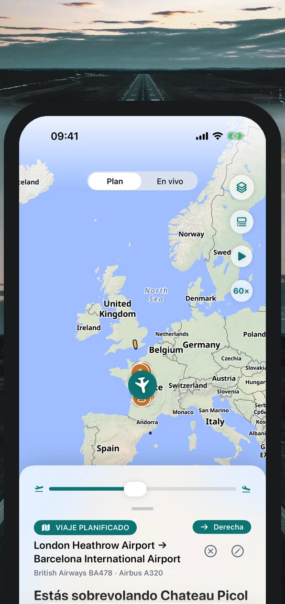
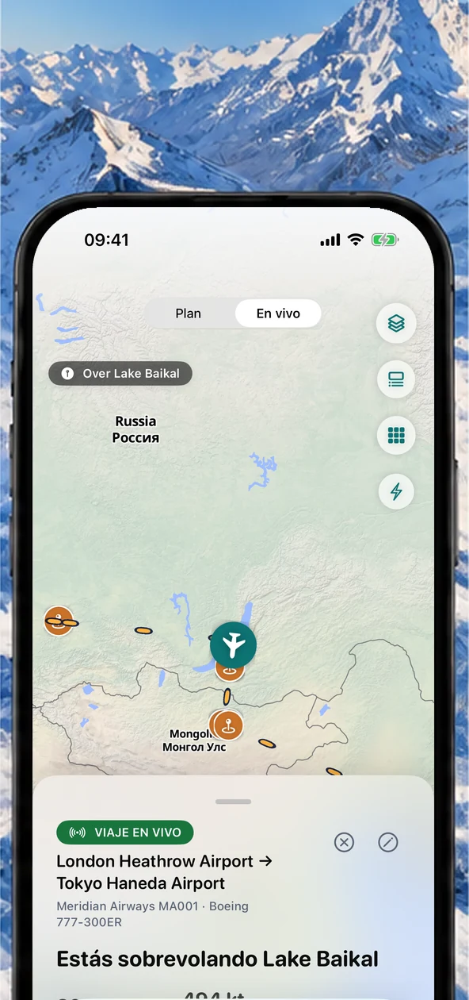
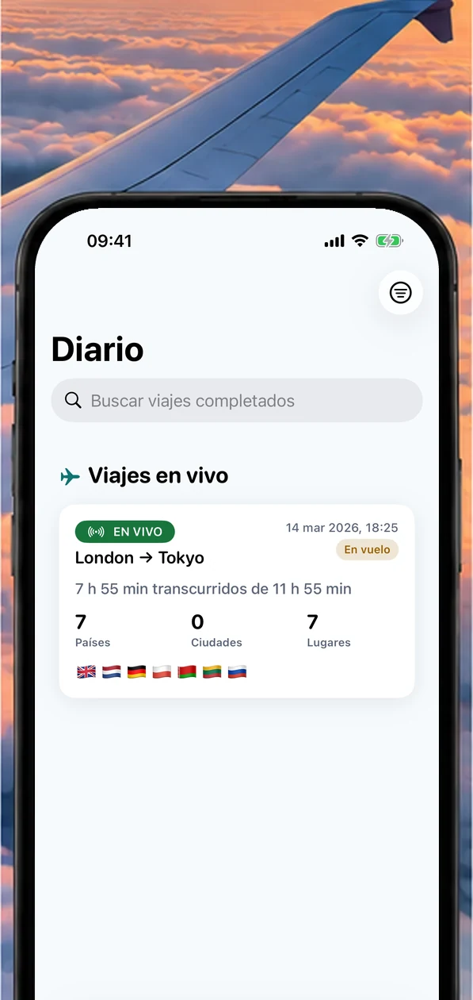
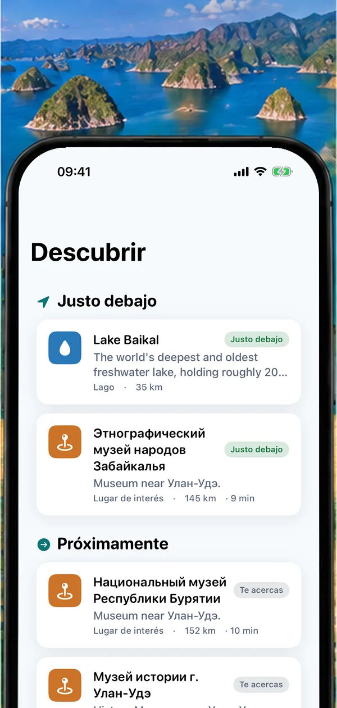
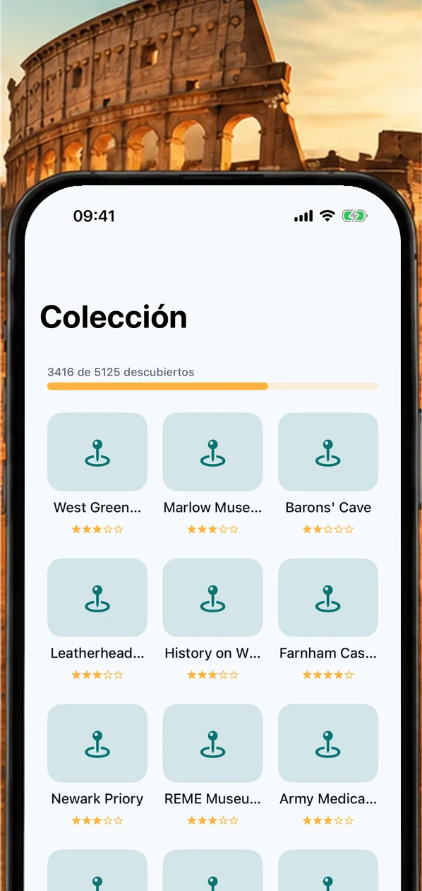
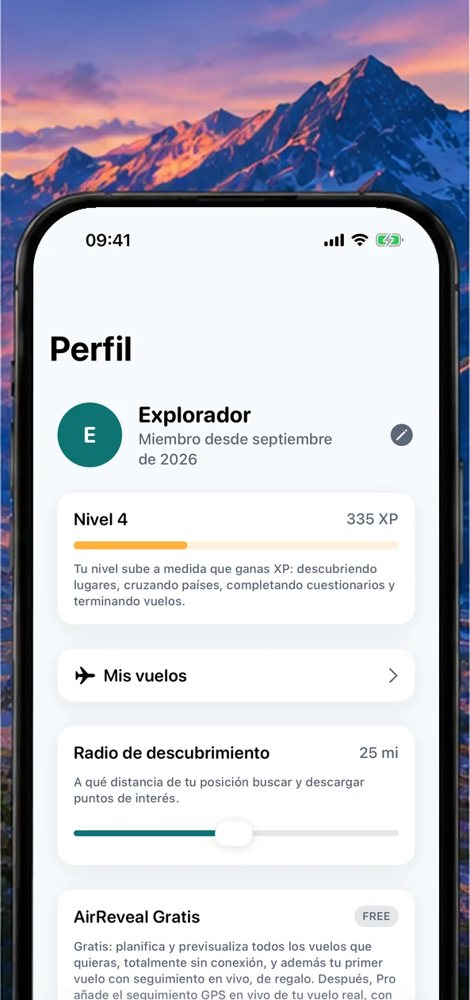
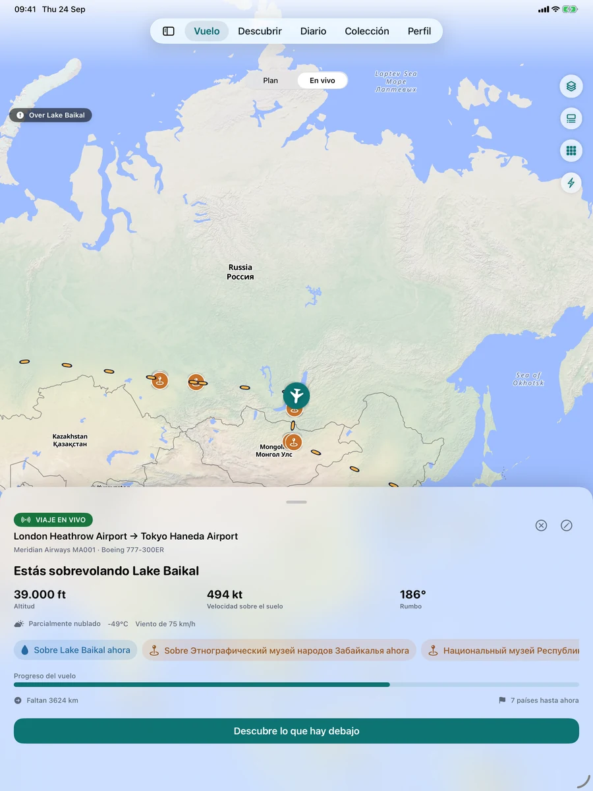
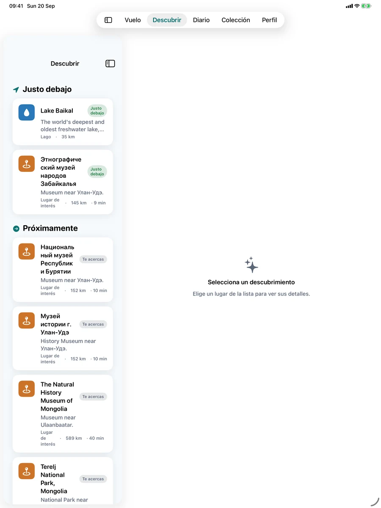
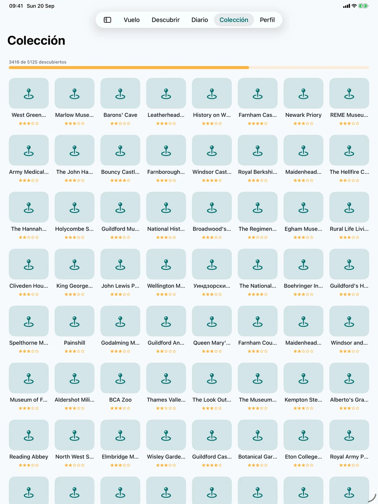

Planifica cada vuelo
Previsualiza tu ruta antes incluso de llegar al aeropuerto y avanza por todo el trayecto para ver lo que viene.
Mira qué estás sobrevolando, descubre por qué ventanilla mirar, ponte a prueba con preguntas sobre cada lugar y guarda cada viaje en tu diario de vuelo. Para cualquiera que se haya preguntado alguna vez qué hay ahí abajo.



Dónde estás, qué hay debajo y alguna curiosidad sobre todo ello, en una app tranquila y fácil de usar a cualquier edad.
Previsualiza tu ruta antes incluso de llegar al aeropuerto y avanza por todo el trayecto para ver lo que viene.
Seguimiento de vuelos en vivo, mapas preciosos y vistas impresionantes, incluso sin conexión.
Lugares fascinantes, ciudades y maravillas naturales en tiempo real.

Revive tus viajes y colecciona los lugares que los hicieron especiales.
Convierte tus viajes en un mapa personal del mundo.

Juega a los cuestionarios de lugares y al Bingo de Descubrimientos, consigue logros y sella tu pasaporte.

No necesitas saber nada de aviones para disfrutar de AirReveal. Si alguna vez te has preguntado qué hay ahí abajo, es para ti.
Altitud, velocidad sobre el suelo y rumbo, tu tipo de avión y número de vuelo, y un registro de cada viaje que has hecho.
Hasta la ruta que haces cada semana sobrevuela algo nuevo. Descárgala antes de embarcar y mira el progreso de un vistazo en la pantalla de bloqueo.
Comparte la ventanilla con el Bingo de Descubrimientos y cuestionarios rápidos. Por turnos, a ver quién completa antes una línea, y comparte el resumen del viaje al aterrizar.
Tres preguntas rápidas sobre cada lugar, logros por desbloquear y un sello en el pasaporte por cada país que sobrevuelas. Pantallas claras y sencillas, sin tecnicismos, y un texto que crece con los ajustes de tu dispositivo.
Una experiencia adaptable pensada para el dispositivo que tienes en la mano, desde un vistazo rápido en el iPhone hasta un amplio mapa de vuelo en el iPad.



Cada asiento de ventanilla plantea la misma pregunta. AirReveal la responde: tu posición en vivo en el mapa, los lugares, ciudades y maravillas naturales bajo y delante de tu avión, y lo que viene a continuación.
Lugares reales a lo largo de tu ruta, nombrados a medida que los sobrevuelas, usando el GPS de tu dispositivo.
Sabrás si un lugar, o el sol de la hora dorada, está a la izquierda o a la derecha para elegir bien la ventanilla.
Un mapa de vuelo sin conexión que solo necesita GPS. Descarga el contenido de tu vuelo antes de salir y listo.
Guarda cada vuelo, colecciona los lugares que has visto y sella tu pasaporte de países.
Abre AirReveal y usará el GPS de tu dispositivo para situarte en el mapa y nombrar los lugares, ciudades, costas y maravillas naturales bajo y delante de tu avión, en tiempo real.
Sí. El seguimiento en vivo usa el GPS de tu dispositivo, que no necesita wifi a bordo ni cobertura móvil. Descarga el contenido sin conexión de un vuelo antes de salir para tener listos los mapas y los lugares.
AirReveal te dice si un lugar, o el sol a la hora dorada, está a la izquierda o a la derecha de tu aeronave, para que sepas por qué ventanilla mirar.
No. AirReveal es un compañero personal para el viaje en sí. No es un servicio oficial de estado de vuelos, tráfico aéreo ni seguridad aérea, así que consulta a tu aerolínea y a tu aeropuerto para puertas, retrasos e instrucciones de la tripulación.
Sí. Guarda cada vuelo en tu diario, colecciona los lugares que descubras, sella tu pasaporte de países y sigue tu progreso con logros.
Para nada. Indica desde dónde y hacia dónde vuelas y AirReveal hace el resto. Nuestra guía de uso (en inglés) te acompaña paso a paso y explica los términos y abreviaturas que puedas ver.
Puedes planificar y previsualizar vuelos y hacer tu primer vuelo con seguimiento en vivo gratis. AirReveal Pro desbloquea el seguimiento GPS en vivo continuo y toda la experiencia en vuelo.
Planifica y previsualiza vuelos y explora la experiencia antes de despegar.
Desbloquea el seguimiento GPS en vivo continuo y toda la experiencia en vuelo.
Los precios se muestran en tu moneda en la App Store.
AirReveal llegará pronto a la App Store para iPhone y iPad.